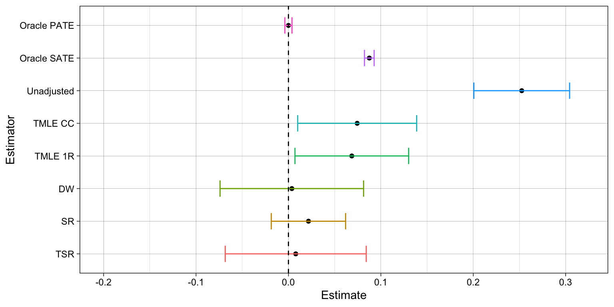

Simulation task: recovering causal effects from post-treatment selection induced by missing outcome data
selection bias
mediation
regression
IPW
doubly-robust
TMLE
A simulation exercise on missing data, selection bias, causal inference and TMLE
Published
October 15, 2023
Objective
The goal is to estimate the average treatment effect (ATE) of a binary treatment on a continuous outcome, from observational data where the outcome is subject to a missingness/selection mechanism.
For this task, we employ:
The structural causal models (SCM) framework (Pearl 2009)
A generated observational dataset
A back-door admissible set of pre-treatment variables; i.e., the assumption of no latent confounding
A missing-outcome mechanism that allows recoverability via IPW and regression adjustment
Generated data from substantive model and missingness mechanism
We build a directed acyclic graph (DAG) \(\mathcal{G}\), involving the exposure \(A\), the outcome \(Y\), a confounder variable \(W\), mediators of the effect \(M,Z\), and missingness mechanism for the outcome \(R\)
Code
# DAG visualizationlibrary(ggplot2)library(dagitty)library(ggdag)dagify( A ~ W, M ~ A, Z ~ A + M, Y ~ W + A + M + Z, R ~ M + Z) %>%tidy_dagitty(layout ="kk") %>%ggplot(aes(x = x, y = y, xend = xend, yend = yend)) +geom_dag_point(color='white',size=0.5) +geom_dag_edges() +geom_dag_text(color='black') +theme_dag()
A fixed set of causal mechanisms \({f}_V:\text{supp}\, \text{pa}(V;\mathcal{G})\times \text{supp}\, U_V\rightarrow\text{supp}\, V\) allows us to generate fake data from seeds (noises and exogenous variables) in a controlled environment, along with all necessary counterfactual variables.
Generated substantive variables are:
\(W\in\mathbb{R}\) = confounder
\(A\in\{0,1\}\) = binary treatment
\(Y\in\mathbb{R}\) = outcome
\(M,Z\in\mathbb{R}\) = mediators of the effect of treatment on the outcome
Counterfactual variables are:
\(M^A,Z^A\) = value of mediators \(M,Z\)had the individual taken treatment\(A\)
\(Y^{A}\) = value of the outcome had the individual taken treatment\(A\)
We employ the following nonlinear specifications for the causal mechanisms: \[
\begin{aligned}
W &= U_W \quad & U_W\sim N(0,1)\\
A &= \mathbb{I}[0.9W -0.09\,\text{sign}(W)\,W^2 + U_A > 0],\quad & U_A\sim N(0,1)\\
M &= -0.50 + A + U_M,\quad & U_M\sim N(0,1)\\
Z &= 0.12\,[4.2 + 0.25\,(2A-1) + 0.30M + 0.05\,(2A-1)\, M + U_Z]^2,\quad & U_Z\sim N(0,1)\\
Y &= 1.80W+ 0.20W^3 + 0.75\,(2A-1) + 0.50\,(2A-1)\, W & \\
&\qquad + 2.00M + 0.50\,(2A-1)\, M + 0.80\,(2A-1)\, Z+ U_Y,\quad & U_Y\sim N(0,11)\\
\end{aligned}
\]
Missingness mechanism
We run the analysis under three different scenarios for the missingness mechanism of the outcome: \(R_1\), \(R_2\), and \(R_3\). Such mechanisms share a simple logit specification on the mediators \(M,Z\):
\[
R = \mathbb{I}[\theta + 0.29 M + 0.54 Z + U_R > 0],\quad U_R\sim N(0,1)
\]
Different configurations of \(\theta\) generate missingness mechanisms of different strength.
Case 1: severe selection: by setting \(\theta=-1.20\), we obtain around 50% of missing cases
Case 2: medium selection: by setting \(\theta=-0.52\), we obtain around 25% of missing cases
Case 3: low selection: by setting \(\theta=-0.43\), we obtain around 10% of missing cases
A dataset (full.data) of \(N=10\,000\) samples was generated:
Code
# Causal mechanisms ------------------------------------------------------------# Causal mechanism for treatment assignmentcoef.A =c(0.00, 0.90, -0.09)fun.A =function(w, u){ dat =as.numeric(c(1, w, sign(w)*w^2)) lo =dot(coef.A, dat) + ureturn(as.numeric(lo>0))}# Causal mechanism for mediator 1coef.M =c(-0.50, 1.00)fun.M =function(a, u){ dat =as.numeric(c(1, a)) li =dot(coef.M, dat) + ureturn(li)}# Causal mechanism for mediator 2coef.Z =c(4.20, 0.25, 0.30, 0.05)fun.Z =function(a, m, u){ dat =as.numeric(c(1, 2*a-1, m, (2*a-1)*m)) li =0.12*(dot(coef.Z, dat) + u)^2return(li)}# Causal mechanism for outcomecoef.Y =c(0.00, 1.80, 0.20, 0.75, 0.50, 2.00, 0.50, 0.80)fun.Y =function(w, a, m, z, u){ dat =as.numeric(c(1, w, w^3, 2*a-1, (2*a-1)*w, m, (2*a-1)*m, (2*a-1)*z)) li =dot(coef.Y, dat) + ureturn(li)}# Causal mechanism for missingness mechanisms. Rcoef.R =c(0.29, 0.54) fun.R =function(m, z, u){ dat =as.numeric(c(m, z)) lo = r.bias +dot(coef.R, dat) + ureturn(as.numeric(lo>0))}# Generate the data ------------------------------------------------------------# Number of samplesN =1e4# Seedset.seed(77)# Generate exogenous variables: independent confounders and noises, # plus fixed treatment assignments A.1 and A.0full.data =data.table(noise.A =rnorm(N, 0, 1),noise.M =rnorm(N, 0, 1),noise.Z =rnorm(N, 0, 1),noise.Y =rnorm(N, 0, 11),noise.R1 =rnorm(N, 0, 1),noise.R2 =rnorm(N, 0, 1),noise.R3 =rnorm(N, 0, 1),W =rnorm(N, 0, 1),A.1 =1, A.0 =0)# Generate observationsfull.data = full.data[, A:=mapply(fun.A, W, noise.A)] %>% .[, M:=mapply(fun.M, A, noise.M)] %>% .[, M.1:=mapply(fun.M, A.1, noise.M)] %>% .[, M.0:=mapply(fun.M, A.0, noise.M)] %>% .[, Z:=mapply(fun.Z, A, M, noise.Z)] %>% .[, Z.1:=mapply(fun.Z, A.1, M.1, noise.Z)] %>% .[, Z.0:=mapply(fun.Z, A.0, M.0, noise.Z)] %>% .[, Y:=mapply(fun.Y, W, A, M, Z, noise.Y)] %>% .[, Y.1:=mapply(fun.Y, W, A.1, M.1, Z.1, noise.Y)] %>% .[, Y.0:=mapply(fun.Y, W, A.0, M.0, Z.0, noise.Y)] %>% .[, ITE:=Y.1-Y.0] # Generate missingness indicator, case 1: R1r.bias =-1.20full.data = full.data[, R1:=mapply(fun.R, M, Z, noise.R1)]# Generate missingness indicator, case 2: R2r.bias =-0.52full.data = full.data[, R2:=mapply(fun.R, M, Z, noise.R2)]# Generate missingness indicator, case 2: R2r.bias =-0.43full.data = full.data[, R3:=mapply(fun.R, M, Z, noise.R3)]# A glimpse of the datafull.data[,8:24] %>%head() %>%kable(caption ="Table 1: A glimpse at the generated data")
Table 1: A glimpse at the generated data
W
A.1
A.0
A
M
M.1
M.0
Z
Z.1
Z.0
Y
Y.1
Y.0
ITE
R1
R2
R3
0.6598987
1
0
1
-1.1125637
-1.1125637
-2.1125637
2.862417
2.862417
2.1626663
-9.889348
-9.889348
-16.45675
6.567402
1
1
1
-0.2561566
1
0
1
1.0083732
1.0083732
0.0083732
1.112559
1.112559
0.5776615
19.453696
19.453696
14.34930
5.104393
0
0
1
-0.3617037
1
0
1
-0.2945485
-0.2945485
-1.2945485
5.422882
5.422882
4.3226736
22.147969
22.147969
12.00778
10.140192
1
1
1
-0.4995301
1
0
1
2.3817717
2.3817717
1.3817717
3.136195
3.136195
2.0409439
23.088961
23.088961
14.06501
9.023953
0
1
1
-1.5825305
1
0
0
-1.1021504
-0.1021504
-1.1021504
1.300471
1.950634
1.3004709
21.726949
25.643152
21.72695
3.916203
1
0
0
-0.7978039
1
0
1
-0.0289140
-0.0289140
-1.0289140
2.196055
2.196055
1.4959814
-6.400891
-6.400891
-11.52780
5.126911
1
0
1
Estimators to compare
Table 1: estimators to be compared in simulations
Estimator
Method
Note
Oracle PATE sample-based
Average of ITE in the whole sample
Impossible to compute, we do not observe both counterfactuals nor missing outcome
Oracle SATE sample-based
Average of ITE in the selected sample
Impossible to compute, we do not observe both counterfactuals
Student’s t-test
Mean difference of observed outcomes treated vs control
It suffers from confounding and selection biases
TML pre-exposure
TMLE adjusting only for pre-exposure \(W\)
It is not consistent in our DAG
TML pre-processing
TMLE using pre-processing tool for missing data in tmle package
It is not based on graphical criteria
Doubly-inverse weighted
Outcome difference weighted by propensity score and selection prob.
It is consistent in our DAG if models are correctly specified
Nested regressions
Paper proposal 1
It is consistent in our DAG if models are correctly specified
TML 2-steps
Paper proposal 2
It is consistent in our DAG with multiple robusness conditions for models
Super-learning procedure
Some estimators are produced under a super-learning scheme. They are based on weighted stacks of a library of base estimators: i) saple mean, ii) generalized linear model (GLM), and iii) spline regression model (earth package).
Code
# Learning algorithms employed to learn treatment/outcome mechanisms -----------# Mean modellrnr_me =make_learner(Lrnr_mean) # GLMlrnr_lm =make_learner(Lrnr_glm_fast)# Spline regressionlrnr_sp =make_learner(Lrnr_earth) # Meta-learners: to stack together predictions from the learners ---------------# Combine continuous predictions with non-negative least squaresmeta_C =make_learner(Lrnr_nnls) # Combine binary predictions with logit likelihood (augmented Lagrange optimizer)meta_B =make_learner(Lrnr_solnp, loss_function = loss_loglik_binomial, learner_function = metalearner_logistic_binomial) # Super-learners: learners + meta-learners together ----------------------------# Continuous super-learningsuper_C = Lrnr_sl$new(learners =list(lrnr_me, lrnr_lm, lrnr_sp), metalearner = meta_C)# Binary super-learningsuper_B = Lrnr_sl$new(learners =list(lrnr_me, lrnr_lm, lrnr_sp), metalearner = meta_B)# Super-learners put togethersuper_list =list(A = super_B,Y = super_C)
Case 1: severe missingness/selection
Code
#-------------------------------------------------------------------------------# Estimator A: Oracle PATE -----------------------------------------------------oracle.ttest =t.test(full.data$ITE)pate =unname(c(oracle.ttest$conf.int[1], oracle.ttest$conf.int[2], oracle.ttest$estimate))#-------------------------------------------------------------------------------# Estimator B: Oracle SATE -----------------------------------------------------oracle.ttest =t.test(full.data[R1==1,ITE])sate =unname(c(oracle.ttest$conf.int[1], oracle.ttest$conf.int[2], oracle.ttest$estimate))#-------------------------------------------------------------------------------# Estimator 1: Unadjusted t-test -----------------------------------------------unadj.mod =lm_robust(Y~A,full.data[R1==1,])# Save estimate and CIunadj.est =unname(c(unadj.mod$conf.low[2], unadj.mod$conf.high[2], unadj.mod$coefficients[2]))#-------------------------------------------------------------------------------# Estimator 2: TMLE with only pre-treatment variables --------------------------tmle.pret =tmle3(tmle_spec =tmle_ATE(1,0), # Targeting the ATEnode_list =list(W ='W', A ='A', Y ='Y'), # Variables involved data = full.data[R1==1,], # Data learner_list = super_list) # Super-learners # Save estimate and CItmle.ptest =c(tmle.pret$summary$lower, tmle.pret$summary$upper, tmle.pret$summary$tmle_est)#-------------------------------------------------------------------------------# Estimator 3: TMLE with pre-processing tool for missingness -------------------temp.dt =copy(full.data)temp.dt$Y =ifelse(temp.dt$R1==0,NA,temp.dt$Y)processed =process_missing(temp.dt[,c('W','A','Y')], # datanode_list =list(W ='W', # confoundersA ='A', # exposureY ='Y'), # outcomecomplete_nodes =c('W','A'),impute_nodes ="Y",max_p_missing =0.9) tmle.proc =tmle3(tmle_spec =tmle_ATE(1,0), # Targeting the ATEnode_list =list(W =c('W','delta_Y'),A ='A', Y ='Y'), # Variables involved data = processed$data, # Data learner_list = super_list) # Super-learners # Save estimate and CItmle.proc =c(tmle.proc$summary$lower, tmle.proc$summary$upper, tmle.proc$summary$tmle_est)#-------------------------------------------------------------------------------# Estimator 4: Doubly-inverse weighted estimator -------------------------------# Model for treatment assignmenttrain.A =make_sl3_Task(data = full.data, outcome ='A', covariates ='W')A_fit = super_B$train(task = train.A)A_pre = A_fit$predict(task = train.A)# Model for missingness mechanismtrain.R =make_sl3_Task(data = full.data, outcome ='R1', covariates =c('W','A','M','Z'))R_fit = super_B$train(task = train.R)R_pre = R_fit$predict(task = train.R)# LM with doubly inverse weightsfull.data = full.data[, DIW := (1/R_pre)*((A/A_pre)+(1-A)/(1-A_pre))]diw.mod =lm_robust(Y~A,full.data[R1==1,], weights = DIW)# Save estimate and CIdiw.est =unname(c(diw.mod$conf.low[2], diw.mod$conf.high[2], diw.mod$coefficients[2]))#-------------------------------------------------------------------------------# Estimator 5: Nested regressions, T-learner -----------------------------------# Model for Q1train.Q1 =make_sl3_Task(data = full.data[R1==1,], outcome ='Y', covariates =c('W','A','M','Z'))Q1_fit = super_C$train(task = train.Q1)# Prediction task for Q1pred.Q1 =make_sl3_Task(data = full.data, outcome ='Y', covariates =c('W','A','M','Z'))full.data$Q1 = Q1_fit$predict(task = pred.Q1)# Model for Q2.1 train.Q2.1=make_sl3_Task(data = full.data[A==1,], outcome ='Q1', covariates =c('W'))Q2.1_fit = super_C$train(task = train.Q2.1)pred.Q2.1=make_sl3_Task(data = full.data, outcome ='Q1', covariates =c('W'))full.data$Q2.1= Q2.1_fit$predict(task = pred.Q2.1)# Model for Q2.0train.Q2.0=make_sl3_Task(data = full.data[A==0,], outcome ='Q1', covariates =c('W'))Q2.0_fit = super_C$train(task = train.Q2.0)pred.Q2.0=make_sl3_Task(data = full.data, outcome ='Q1', covariates =c('W'))full.data$Q2.0= Q2.0_fit$predict(task = pred.Q2.0)# Predicted difference Q2.1 - Q2.0full.data$delta = full.data$Q2.1-full.data$Q2.0# Bootstrap procedure to compute the standard deviationbsamples =c()for(j in1:30){# Boostraped data ind =sample(1:N,N,replace=T) bs.data =copy(full.data[ind,])# Model for Q1 train.bs.Q1 =make_sl3_Task(data = bs.data[R1==1,], outcome ='Y', covariates =c('W','A','M','Z')) bs.Q1_fit = super_C$train(task = train.bs.Q1)# Prediction task for Q1 pred.bs.Q1 =make_sl3_Task(data = bs.data, outcome ='Y', covariates =c('W','A','M','Z')) bs.data$Q1 = bs.Q1_fit$predict(task = pred.bs.Q1)# Model for Q2.1. train.bs.Q2.1=make_sl3_Task(data = bs.data[A==1,], outcome ='Q1', covariates =c('W')) bs.Q2.1_fit = super_C$train(task = train.bs.Q2.1) pred.bs.Q2.1=make_sl3_Task(data = bs.data, outcome ='Q1', covariates =c('W')) bs.data$Q2.1= bs.Q2.1_fit$predict(task = pred.bs.Q2.1)# Model for Q2.0 train.bs.Q2.0=make_sl3_Task(data = bs.data[A==0,], outcome ='Q1', covariates =c('W')) bsQ2.0_fit = super_C$train(task = train.bs.Q2.0) pred.bs.Q2.0=make_sl3_Task(data = bs.data, outcome ='Q1', covariates =c('W')) bs.data$Q2.0= Q2.0_fit$predict(task = pred.bs.Q2.0)# Add predicted difference Q2.1 - Q2.0 to boostrap vessel bsamples =c(bsamples, mean(bs.data$Q2.1-bs.data$Q2.0))}# Save estimate and CInesreg.T =c(mean(full.data$delta)-qnorm(0.975)*sd(bsamples),mean(full.data$delta)+qnorm(0.975)*sd(bsamples),mean(full.data$delta))#-------------------------------------------------------------------------------# Estimator 6: 2-step TMLE ----------------------------------------------------# STEP 1 ------------------# Define clever variablefull.data = full.data[, clever.H1 := (1/R_pre)*((A/A_pre)-(1-A)/(1-A_pre))] # Define fluctuation modelfluct.model.1=lm(Y ~-1+offset(Q1) + clever.H1, data=full.data[R1==1,])# Auxiliary data frame for predictiontemp.dt =copy(full.data)# Using estimated fluctuation parameter, update Q1.1temp.dt$A =1pred.Q1 =make_sl3_Task(data = temp.dt, outcome ='Y', covariates =c('W','A','M','Z'))full.data$Q1.1= Q1_fit$predict(task = pred.Q1)full.data$up.Q1.1=predict(fluct.model.1, newdata =data.frame(Q1=full.data$Q1.1,clever.H1=(1/R_pre)*(1/A_pre)))# Using estimated fluctuation parameter, update Q1.0temp.dt$A =0pred.Q1 =make_sl3_Task(data = temp.dt, outcome ='Y', covariates =c('W','A','M','Z'))full.data$Q1.0= Q1_fit$predict(task = pred.Q1)full.data$up.Q1.0=predict(fluct.model.1, newdata =data.frame(Q1=full.data$Q1.0,clever.H1=(1/R_pre)*(-1/(1-A_pre))))# Learn Q2.1 from up.Q1.1, using A=1 casestemp.dt =copy(full.data[A==1,])train.Q2 =make_sl3_Task(data = temp.dt, outcome ='up.Q1.1', covariates =c('W'))Q2_fit = super_C$train(task = train.Q2)pred.Q2 =make_sl3_Task(data = full.data, outcome ='up.Q1.1', covariates =c('W'))full.data$Q2.1= Q2_fit$predict(task = pred.Q2)# Learn Q2.0 from up.Q1.0, using A=0 casestemp.dt =copy(full.data[A==0,])train.Q2 =make_sl3_Task(data = temp.dt, outcome ='up.Q1.0', covariates =c('W'))Q2_fit = super_C$train(task = train.Q2)pred.Q2 =make_sl3_Task(data = full.data, outcome ='up.Q1.0', covariates =c('W'))full.data$Q2.0= Q2_fit$predict(task = pred.Q2)# STEP 2 ------------------# Compute the observed values for up.Q1 and Q2# Define clever variablefull.data = full.data[, up.Q1.A := A*up.Q1.1+ (1-A)*up.Q1.0 ] %>% .[, Q2.A := A*Q2.1+ (1-A)*Q2.0 ] %>% .[, clever.H2 := ((A/A_pre)-(1-A)/(1-A_pre))] # Define fluctuation modelfluct.model.2=lm(up.Q1.A ~-1+offset(Q2.A) + clever.H2, data=full.data)# Using estimated fluctuation parameter, update Q2.1full.data$up.Q2.1=predict(fluct.model.2, newdata =data.frame(Q2.A=full.data$Q2.1,clever.H2=1/A_pre))# Using estimated fluctuation parameter, update Q2.0full.data$up.Q2.0=predict(fluct.model.2, newdata =data.frame(Q2.A=full.data$Q2.0,clever.H2=-1/(1-A_pre)))# Compute the updated difference Q2.1 - Q2.0# Compute the observed value for up.Q2# Compute the value of the efficient influence functionfull.data = full.data[, delta.up.Q2 := up.Q2.1-up.Q2.0] %>% .[, up.Q2.A := A*up.Q2.1+ (1-A)*up.Q2.0] %>% .[, EIF := delta.up.Q2 + clever.H2*(up.Q1.A - up.Q2.A) + clever.H1*(Y - up.Q1.A)*R1]# Using the EIF, compute the asymptotic errorasymp.sd =sd(full.data$EIF)/sqrt(N)# Save estimate and CItmle.2step =c(mean(full.data$delta.up.Q2)-qnorm(0.975)*asymp.sd,mean(full.data$delta.up.Q2)+qnorm(0.975)*asymp.sd,mean(full.data$delta.up.Q2))#-------------------------------------------------------------------------------# Visualization of results -----------------------------------------------------# PUT ALL TOGETHERestimators =data.table(rbind(pate,sate,unadj.est,tmle.ptest,tmle.proc, diw.est,nesreg.T,tmle.2step))colnames(estimators) =c('lower','upper','point.est')estimators$type =c('Oracle PATE','Oracle SATE',"Student's t-test",'TML PreExp','TML PreProc','DIW','Nested Reg','TML 2-Step')estimators$type =factor(estimators$type,levels =rev(estimators$type))# Estimate and CI plotggplot(estimators, aes(y=type, x=point.est, group=type)) +geom_point(position=position_dodge(0.78)) +geom_errorbar(aes(xmin=lower, xmax=upper, color=type),width=0.5, position=position_dodge(0.78)) +guides(color=FALSE) +labs(x='Estimate',y='Estimator') +theme_linedraw() +xlim(c(3.3,11.1)) +geom_vline(xintercept = pate[3], linetype="dashed")
Case 2: moderate missingness/selection
Code
#-------------------------------------------------------------------------------# Estimator A: Oracle PATE -----------------------------------------------------oracle.ttest =t.test(full.data$ITE)pate =unname(c(oracle.ttest$conf.int[1], oracle.ttest$conf.int[2], oracle.ttest$estimate))#-------------------------------------------------------------------------------# Estimator B: Oracle SATE -----------------------------------------------------oracle.ttest =t.test(full.data[R2==1,ITE])sate =unname(c(oracle.ttest$conf.int[1], oracle.ttest$conf.int[2], oracle.ttest$estimate))#-------------------------------------------------------------------------------# Estimator 1: Unadjusted t-test -----------------------------------------------unadj.mod =lm_robust(Y~A,full.data[R2==1,])# Save estimate and CIunadj.est =unname(c(unadj.mod$conf.low[2], unadj.mod$conf.high[2], unadj.mod$coefficients[2]))#-------------------------------------------------------------------------------# Estimator 2: TMLE with only pre-treatment variables --------------------------tmle.pret =tmle3(tmle_spec =tmle_ATE(1,0), # Targeting the ATEnode_list =list(W ='W', A ='A', Y ='Y'), # Variables involved data = full.data[R2==1,], # Data learner_list = super_list) # Super-learners # Save estimate and CItmle.ptest =c(tmle.pret$summary$lower, tmle.pret$summary$upper, tmle.pret$summary$tmle_est)#-------------------------------------------------------------------------------# Estimator 3: TMLE with pre-processing tool for missingness -------------------temp.dt =copy(full.data)temp.dt$Y =ifelse(temp.dt$R2==0,NA,temp.dt$Y)processed =process_missing(temp.dt[,c('W','A','Y')], # datanode_list =list(W ='W', # confoundersA ='A', # exposureY ='Y'), # outcomecomplete_nodes =c('W','A'),impute_nodes ="Y",max_p_missing =0.9) tmle.proc =tmle3(tmle_spec =tmle_ATE(1,0), # Targeting the ATEnode_list =list(W =c('W','delta_Y'),A ='A', Y ='Y'), # Variables involved data = processed$data, # Data learner_list = super_list) # Super-learners # Save estimate and CItmle.proc =c(tmle.proc$summary$lower, tmle.proc$summary$upper, tmle.proc$summary$tmle_est)#-------------------------------------------------------------------------------# Estimator 4: Doubly-inverse weighted estimator -------------------------------# Model for treatment assignmenttrain.A =make_sl3_Task(data = full.data, outcome ='A', covariates ='W')A_fit = super_B$train(task = train.A)A_pre = A_fit$predict(task = train.A)# Model for missingness mechanismtrain.R =make_sl3_Task(data = full.data, outcome ='R2', covariates =c('W','A','M','Z'))R_fit = super_B$train(task = train.R)R_pre = R_fit$predict(task = train.R)# LM with doubly inverse weightsfull.data = full.data[, DIW := (1/R_pre)*((A/A_pre)+(1-A)/(1-A_pre))]diw.mod =lm_robust(Y~A,full.data[R2==1,], weights = DIW)# Save estimate and CIdiw.est =unname(c(diw.mod$conf.low[2], diw.mod$conf.high[2], diw.mod$coefficients[2]))#-------------------------------------------------------------------------------# Estimator 5: Nested regressions, T-learner -----------------------------------# Model for Q1train.Q1 =make_sl3_Task(data = full.data[R2==1,], outcome ='Y', covariates =c('W','A','M','Z'))Q1_fit = super_C$train(task = train.Q1)# Prediction task for Q1pred.Q1 =make_sl3_Task(data = full.data, outcome ='Y', covariates =c('W','A','M','Z'))full.data$Q1 = Q1_fit$predict(task = pred.Q1)# Model for Q2.1 train.Q2.1=make_sl3_Task(data = full.data[A==1,], outcome ='Q1', covariates =c('W'))Q2.1_fit = super_C$train(task = train.Q2.1)pred.Q2.1=make_sl3_Task(data = full.data, outcome ='Q1', covariates =c('W'))full.data$Q2.1= Q2.1_fit$predict(task = pred.Q2.1)# Model for Q2.0train.Q2.0=make_sl3_Task(data = full.data[A==0,], outcome ='Q1', covariates =c('W'))Q2.0_fit = super_C$train(task = train.Q2.0)pred.Q2.0=make_sl3_Task(data = full.data, outcome ='Q1', covariates =c('W'))full.data$Q2.0= Q2.0_fit$predict(task = pred.Q2.0)# Predicted difference Q2.1 - Q2.0full.data$delta = full.data$Q2.1-full.data$Q2.0# Bootstrap procedure to compute the standard deviationbsamples =c()for(j in1:30){# Boostraped data ind =sample(1:N,N,replace=T) bs.data =copy(full.data[ind,])# Model for Q1 train.bs.Q1 =make_sl3_Task(data = bs.data[R2==1,], outcome ='Y', covariates =c('W','A','M','Z')) bs.Q1_fit = super_C$train(task = train.bs.Q1)# Prediction task for Q1 pred.bs.Q1 =make_sl3_Task(data = bs.data, outcome ='Y', covariates =c('W','A','M','Z')) bs.data$Q1 = bs.Q1_fit$predict(task = pred.bs.Q1)# Model for Q2.1. train.bs.Q2.1=make_sl3_Task(data = bs.data[A==1,], outcome ='Q1', covariates =c('W')) bs.Q2.1_fit = super_C$train(task = train.bs.Q2.1) pred.bs.Q2.1=make_sl3_Task(data = bs.data, outcome ='Q1', covariates =c('W')) bs.data$Q2.1= bs.Q2.1_fit$predict(task = pred.bs.Q2.1)# Model for Q2.0 train.bs.Q2.0=make_sl3_Task(data = bs.data[A==0,], outcome ='Q1', covariates =c('W')) bsQ2.0_fit = super_C$train(task = train.bs.Q2.0) pred.bs.Q2.0=make_sl3_Task(data = bs.data, outcome ='Q1', covariates =c('W')) bs.data$Q2.0= Q2.0_fit$predict(task = pred.bs.Q2.0)# Add predicted difference Q2.1 - Q2.0 to boostrap vessel bsamples =c(bsamples, mean(bs.data$Q2.1-bs.data$Q2.0))}# Save estimate and CInesreg.T =c(mean(full.data$delta)-qnorm(0.975)*sd(bsamples),mean(full.data$delta)+qnorm(0.975)*sd(bsamples),mean(full.data$delta))#-------------------------------------------------------------------------------# Estimator 6: 2-step TMLE ----------------------------------------------------# STEP 1 ------------------# Define clever variablefull.data = full.data[, clever.H1 := (1/R_pre)*((A/A_pre)-(1-A)/(1-A_pre))] # Define fluctuation modelfluct.model.1=lm(Y ~-1+offset(Q1) + clever.H1, data=full.data[R2==1,])# Auxiliary data frame for predictiontemp.dt =copy(full.data)# Using estimated fluctuation parameter, update Q1.1temp.dt$A =1pred.Q1 =make_sl3_Task(data = temp.dt, outcome ='Y', covariates =c('W','A','M','Z'))full.data$Q1.1= Q1_fit$predict(task = pred.Q1)full.data$up.Q1.1=predict(fluct.model.1, newdata =data.frame(Q1=full.data$Q1.1,clever.H1=(1/R_pre)*(1/A_pre)))# Using estimated fluctuation parameter, update Q1.0temp.dt$A =0pred.Q1 =make_sl3_Task(data = temp.dt, outcome ='Y', covariates =c('W','A','M','Z'))full.data$Q1.0= Q1_fit$predict(task = pred.Q1)full.data$up.Q1.0=predict(fluct.model.1, newdata =data.frame(Q1=full.data$Q1.0,clever.H1=(1/R_pre)*(-1/(1-A_pre))))# Learn Q2.1 from up.Q1.1, using A=1 casestemp.dt =copy(full.data[A==1,])train.Q2 =make_sl3_Task(data = temp.dt, outcome ='up.Q1.1', covariates =c('W'))Q2_fit = super_C$train(task = train.Q2)pred.Q2 =make_sl3_Task(data = full.data, outcome ='up.Q1.1', covariates =c('W'))full.data$Q2.1= Q2_fit$predict(task = pred.Q2)# Learn Q2.0 from up.Q1.0, using A=0 casestemp.dt =copy(full.data[A==0,])train.Q2 =make_sl3_Task(data = temp.dt, outcome ='up.Q1.0', covariates =c('W'))Q2_fit = super_C$train(task = train.Q2)pred.Q2 =make_sl3_Task(data = full.data, outcome ='up.Q1.0', covariates =c('W'))full.data$Q2.0= Q2_fit$predict(task = pred.Q2)# STEP 2 ------------------# Compute the observed values for up.Q1 and Q2# Define clever variablefull.data = full.data[, up.Q1.A := A*up.Q1.1+ (1-A)*up.Q1.0 ] %>% .[, Q2.A := A*Q2.1+ (1-A)*Q2.0 ] %>% .[, clever.H2 := ((A/A_pre)-(1-A)/(1-A_pre))] # Define fluctuation modelfluct.model.2=lm(up.Q1.A ~-1+offset(Q2.A) + clever.H2, data=full.data)# Using estimated fluctuation parameter, update Q2.1full.data$up.Q2.1=predict(fluct.model.2, newdata =data.frame(Q2.A=full.data$Q2.1,clever.H2=1/A_pre))# Using estimated fluctuation parameter, update Q2.0full.data$up.Q2.0=predict(fluct.model.2, newdata =data.frame(Q2.A=full.data$Q2.0,clever.H2=-1/(1-A_pre)))# Compute the updated difference Q2.1 - Q2.0# Compute the observed value for up.Q2# Compute the value of the efficient influence functionfull.data = full.data[, delta.up.Q2 := up.Q2.1-up.Q2.0] %>% .[, up.Q2.A := A*up.Q2.1+ (1-A)*up.Q2.0] %>% .[, EIF := delta.up.Q2 + clever.H2*(up.Q1.A - up.Q2.A) + clever.H1*(Y - up.Q1.A)*R2]# Using the EIF, compute the asymptotic errorasymp.sd =sd(full.data$EIF)/sqrt(N)# Save estimate and CItmle.2step =c(mean(full.data$delta.up.Q2)-qnorm(0.975)*asymp.sd,mean(full.data$delta.up.Q2)+qnorm(0.975)*asymp.sd,mean(full.data$delta.up.Q2))#-------------------------------------------------------------------------------# Visualization of results -----------------------------------------------------# PUT ALL TOGETHERestimators =data.table(rbind(pate,sate,unadj.est,tmle.ptest,tmle.proc, diw.est,nesreg.T,tmle.2step))colnames(estimators) =c('lower','upper','point.est')estimators$type =c('Oracle PATE','Oracle SATE',"Student's t-test",'TML PreExp','TML PreProc','DIW','Nested Reg','TML 2-Step')estimators$type =factor(estimators$type,levels =rev(estimators$type))# Estimate and CI plotggplot(estimators, aes(y=type, x=point.est, group=type)) +geom_point(position=position_dodge(0.78)) +geom_errorbar(aes(xmin=lower, xmax=upper, color=type),width=0.5, position=position_dodge(0.78)) +guides(color=FALSE) +labs(x='Estimate',y='Estimator') +theme_linedraw() +xlim(c(3.3,11.1)) +geom_vline(xintercept = pate[3], linetype="dashed")

Case 3: low missingness/selection with misspecification of \(Q_1\)
Code
#-------------------------------------------------------------------------------# Estimator A: Oracle PATE -----------------------------------------------------oracle.ttest =t.test(full.data$ITE)pate =unname(c(oracle.ttest$conf.int[1], oracle.ttest$conf.int[2], oracle.ttest$estimate))#-------------------------------------------------------------------------------# Estimator B: Oracle SATE -----------------------------------------------------oracle.ttest =t.test(full.data[R3==1,ITE])sate =unname(c(oracle.ttest$conf.int[1], oracle.ttest$conf.int[2], oracle.ttest$estimate))#-------------------------------------------------------------------------------# Estimator 1: Unadjusted t-test -----------------------------------------------unadj.mod =lm_robust(Y~A,full.data[R3==1,])# Save estimate and CIunadj.est =unname(c(unadj.mod$conf.low[2], unadj.mod$conf.high[2], unadj.mod$coefficients[2]))#-------------------------------------------------------------------------------# Estimator 2: TMLE with only pre-treatment variables --------------------------tmle.pret =tmle3(tmle_spec =tmle_ATE(1,0), # Targeting the ATEnode_list =list(W ='W', A ='A', Y ='Y'), # Variables involved data = full.data[R3==1,], # Data learner_list = super_list) # Super-learners # Save estimate and CItmle.ptest =c(tmle.pret$summary$lower, tmle.pret$summary$upper, tmle.pret$summary$tmle_est)#-------------------------------------------------------------------------------# Estimator 3: TMLE with pre-processing tool for missingness -------------------temp.dt =copy(full.data)temp.dt$Y =ifelse(temp.dt$R3==0,NA,temp.dt$Y)processed =process_missing(temp.dt[,c('W','A','Y')], # datanode_list =list(W ='W', # confoundersA ='A', # exposureY ='Y'), # outcomecomplete_nodes =c('W','A'),impute_nodes ="Y",max_p_missing =0.9) tmle.proc =tmle3(tmle_spec =tmle_ATE(1,0), # Targeting the ATEnode_list =list(W =c('W','delta_Y'),A ='A', Y ='Y'), # Variables involved data = processed$data, # Data learner_list = super_list) # Super-learners # Save estimate and CItmle.proc =c(tmle.proc$summary$lower, tmle.proc$summary$upper, tmle.proc$summary$tmle_est)#-------------------------------------------------------------------------------# Estimator 4: Doubly-inverse weighted estimator -------------------------------# Model for treatment assignmenttrain.A =make_sl3_Task(data = full.data, outcome ='A', covariates ='W')A_fit = super_B$train(task = train.A)A_pre = A_fit$predict(task = train.A)# Model for missingness mechanismtrain.R =make_sl3_Task(data = full.data, outcome ='R3', covariates =c('W','A','M','Z'))R_fit = super_B$train(task = train.R)R_pre = R_fit$predict(task = train.R)# LM with doubly inverse weightsfull.data = full.data[, DIW := (1/R_pre)*((A/A_pre)+(1-A)/(1-A_pre))]diw.mod =lm_robust(Y~A,full.data[R3==1,], weights = DIW)# Save estimate and CIdiw.est =unname(c(diw.mod$conf.low[2], diw.mod$conf.high[2], diw.mod$coefficients[2]))#-------------------------------------------------------------------------------# Estimator 5: Nested regressions, T-learner -----------------------------------# Model for Q1: MISSPECIFIEDtrain.Q1 =lm(Y ~ W+A+M+Z, data = full.data[R3==1,])full.data$Q1 =predict(train.Q1, newdata = full.data)# Model for Q2.1 train.Q2.1=make_sl3_Task(data = full.data[A==1,], outcome ='Q1', covariates =c('W'))Q2.1_fit = super_C$train(task = train.Q2.1)pred.Q2.1=make_sl3_Task(data = full.data, outcome ='Q1', covariates =c('W'))full.data$Q2.1= Q2.1_fit$predict(task = pred.Q2.1)# Model for Q2.0train.Q2.0=make_sl3_Task(data = full.data[A==0,], outcome ='Q1', covariates =c('W'))Q2.0_fit = super_C$train(task = train.Q2.0)pred.Q2.0=make_sl3_Task(data = full.data, outcome ='Q1', covariates =c('W'))full.data$Q2.0= Q2.0_fit$predict(task = pred.Q2.0)# Predicted difference Q2.1 - Q2.0full.data$delta = full.data$Q2.1-full.data$Q2.0# Bootstrap procedure to compute the standard deviationbsamples =c()for(j in1:60){# Boostraped data ind =sample(1:N,N,replace=T) bs.data =copy(full.data[ind,])# Model for Q1: MISSPECIFIED train.bs.Q1 =lm(Y ~ W+A+M+Z, data = bs.data[R3==1,]) bs.data$Q1 =predict(train.bs.Q1, newdata = bs.data)# Model for Q2.1. train.bs.Q2.1=make_sl3_Task(data = bs.data[A==1,], outcome ='Q1', covariates =c('W')) bs.Q2.1_fit = super_C$train(task = train.bs.Q2.1) pred.bs.Q2.1=make_sl3_Task(data = bs.data, outcome ='Q1', covariates =c('W')) bs.data$Q2.1= bs.Q2.1_fit$predict(task = pred.bs.Q2.1)# Model for Q2.0 train.bs.Q2.0=make_sl3_Task(data = bs.data[A==0,], outcome ='Q1', covariates =c('W')) bsQ2.0_fit = super_C$train(task = train.bs.Q2.0) pred.bs.Q2.0=make_sl3_Task(data = bs.data, outcome ='Q1', covariates =c('W')) bs.data$Q2.0= Q2.0_fit$predict(task = pred.bs.Q2.0)# Add predicted difference Q2.1 - Q2.0 to boostrap vessel bsamples =c(bsamples, mean(bs.data$Q2.1-bs.data$Q2.0))}# Save estimate and CInesreg.T =c(mean(full.data$delta)-qnorm(0.975)*sd(bsamples),mean(full.data$delta)+qnorm(0.975)*sd(bsamples),mean(full.data$delta))#-------------------------------------------------------------------------------# Estimator 6: 2-step TMLE ----------------------------------------------------# STEP 1 ------------------# Define clever variablefull.data = full.data[, clever.H1 := (1/R_pre)*((A/A_pre)-(1-A)/(1-A_pre))] # Define fluctuation modelfluct.model.1=lm(Y ~-1+offset(Q1) + clever.H1, data=full.data[R3==1,])# Auxiliary data frame for predictiontemp.dt =copy(full.data)# Using estimated fluctuation parameter, update Q1.1temp.dt$A =1full.data$Q1.1=predict(train.Q1, newdata = temp.dt)full.data$up.Q1.1=predict(fluct.model.1, newdata =data.frame(Q1=full.data$Q1.1,clever.H1=(1/R_pre)*(1/A_pre)))# Using estimated fluctuation parameter, update Q1.0temp.dt$A =0full.data$Q1.0=predict(train.Q1, newdata = temp.dt)full.data$up.Q1.0=predict(fluct.model.1, newdata =data.frame(Q1=full.data$Q1.0,clever.H1=(1/R_pre)*(-1/(1-A_pre))))# Learn Q2.1 from up.Q1.1, using A=1 casestemp.dt =copy(full.data[A==1,])train.Q2 =make_sl3_Task(data = temp.dt, outcome ='up.Q1.1', covariates =c('W'))Q2_fit = super_C$train(task = train.Q2)pred.Q2 =make_sl3_Task(data = full.data, outcome ='up.Q1.1', covariates =c('W'))full.data$Q2.1= Q2_fit$predict(task = pred.Q2)# Learn Q2.0 from up.Q1.0, using A=0 casestemp.dt =copy(full.data[A==0,])train.Q2 =make_sl3_Task(data = temp.dt, outcome ='up.Q1.0', covariates =c('W'))Q2_fit = super_C$train(task = train.Q2)pred.Q2 =make_sl3_Task(data = full.data, outcome ='up.Q1.0', covariates =c('W'))full.data$Q2.0= Q2_fit$predict(task = pred.Q2)# STEP 2 ------------------# Compute the observed values for up.Q1 and Q2# Define clever variablefull.data = full.data[, up.Q1.A := A*up.Q1.1+ (1-A)*up.Q1.0 ] %>% .[, Q2.A := A*Q2.1+ (1-A)*Q2.0 ] %>% .[, clever.H2 := ((A/A_pre)-(1-A)/(1-A_pre))] # Define fluctuation modelfluct.model.2=lm(up.Q1.A ~-1+offset(Q2.A) + clever.H2, data=full.data)# Using estimated fluctuation parameter, update Q2.1full.data$up.Q2.1=predict(fluct.model.2, newdata =data.frame(Q2.A=full.data$Q2.1,clever.H2=1/A_pre))# Using estimated fluctuation parameter, update Q2.0full.data$up.Q2.0=predict(fluct.model.2, newdata =data.frame(Q2.A=full.data$Q2.0,clever.H2=-1/(1-A_pre)))# Compute the updated difference Q2.1 - Q2.0# Compute the observed value for up.Q2# Compute the value of the efficient influence functionfull.data = full.data[, delta.up.Q2 := up.Q2.1-up.Q2.0] %>% .[, up.Q2.A := A*up.Q2.1+ (1-A)*up.Q2.0] %>% .[, EIF := delta.up.Q2 + clever.H2*(up.Q1.A - up.Q2.A) + clever.H1*(Y - up.Q1.A)*R3]# Using the EIF, compute the asymptotic errorasymp.sd =sd(full.data$EIF)/sqrt(N)# Save estimate and CItmle.2step =c(mean(full.data$delta.up.Q2)-qnorm(0.975)*asymp.sd,mean(full.data$delta.up.Q2)+qnorm(0.975)*asymp.sd,mean(full.data$delta.up.Q2))#-------------------------------------------------------------------------------# Visualization of results -----------------------------------------------------# PUT ALL TOGETHERestimators =data.table(rbind(pate,sate,unadj.est,tmle.ptest,tmle.proc, diw.est,nesreg.T,tmle.2step))colnames(estimators) =c('lower','upper','point.est')estimators$type =c('Oracle PATE','Oracle SATE',"Student's t-test",'TML PreExp','TML PreProc','DIW','Nested Reg','TML 2-Step')estimators$type =factor(estimators$type,levels =rev(estimators$type))# Estimate and CI plotggplot(estimators, aes(y=type, x=point.est, group=type)) +geom_point(position=position_dodge(0.78)) +geom_errorbar(aes(xmin=lower, xmax=upper, color=type),width=0.5, position=position_dodge(0.78)) +guides(color=FALSE) +labs(x='Estimate',y='Estimator') +theme_linedraw() +xlim(c(3.3,11.1)) +geom_vline(xintercept = pate[3], linetype="dashed")
van der Laan, M. J., and S. Rose. 2011. Targeted Learning: Causal Inference for Observational and Experimental Data. Springer Series in Statistics. Springer New York. https://books.google.no/books?id=RGnSX5aCAgQC.